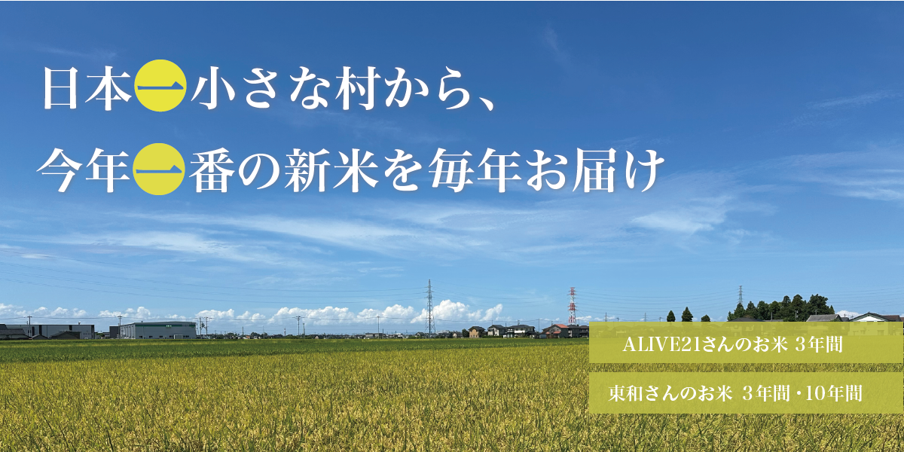
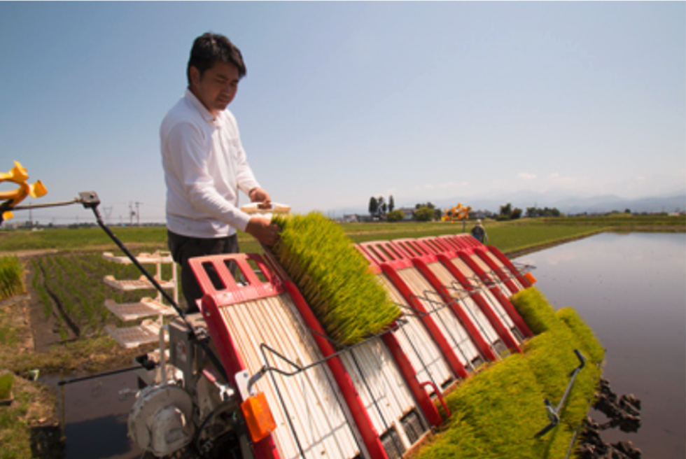
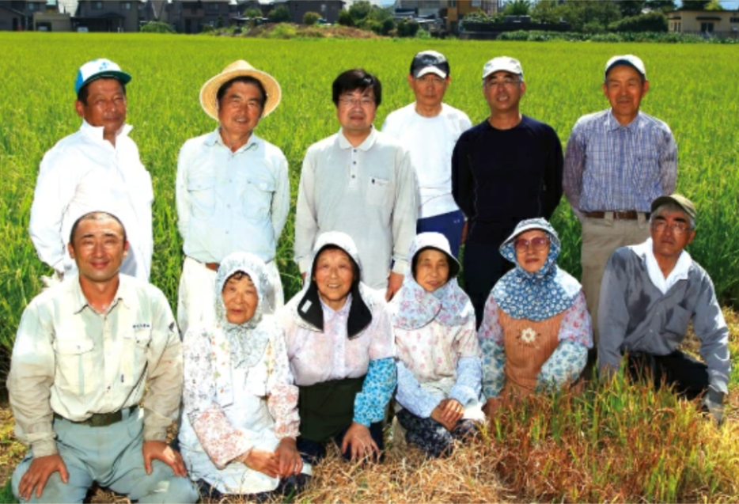
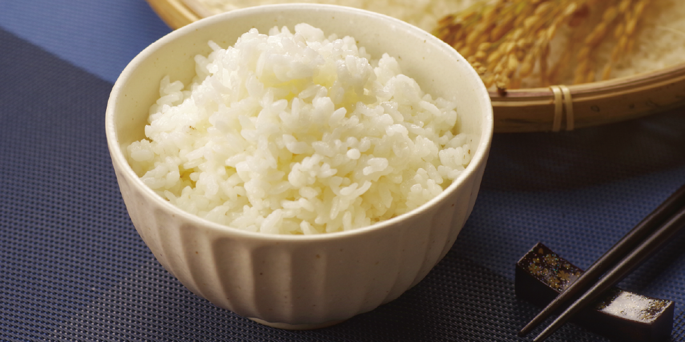
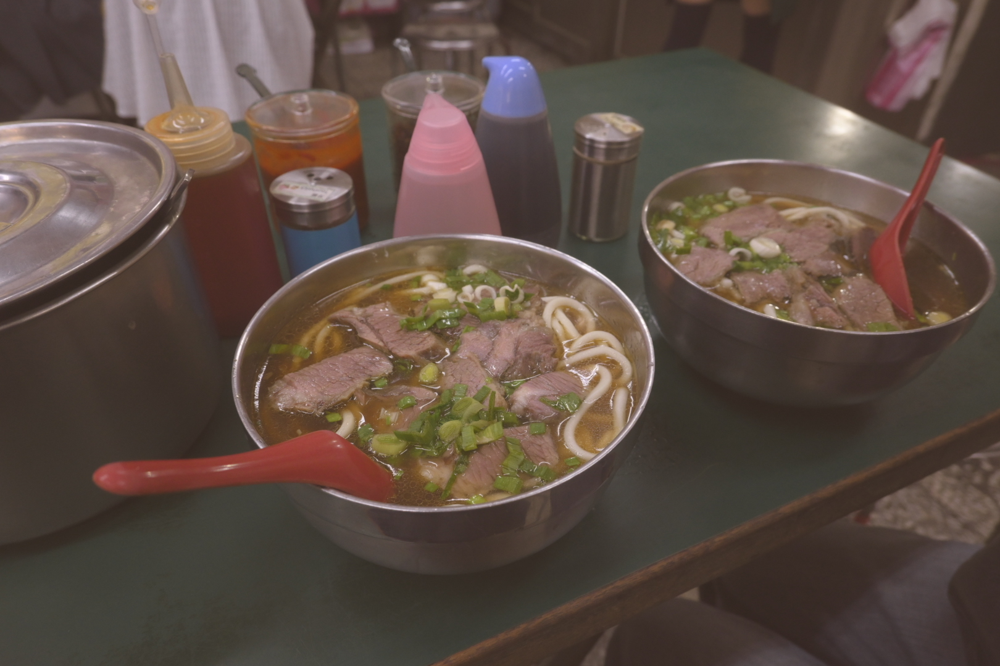
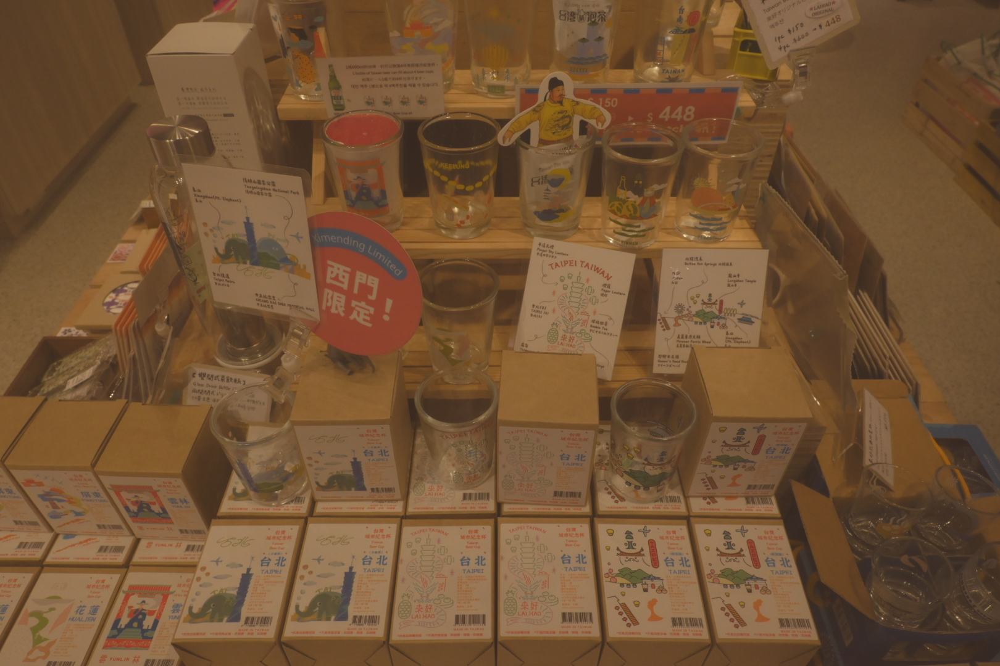
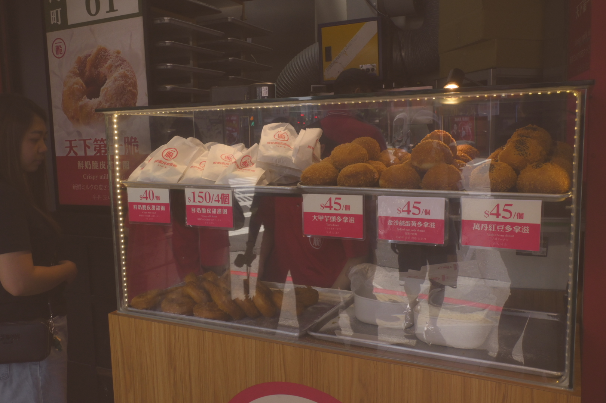

—— 毎年、収穫期の高鳴りとともに届く“新米”。
その年に収穫したしばかりの白米を、収穫期にお届けします。
お選びいただくのは生産者と受け取る期間。量販棚に常時並ぶ米ではないからこそ、“新米の瞬間”を必ず迎えられる約束になります。
立山の雪解け水を受けた舟橋の田から。粘りと甘みのある「コシヒカリ」
富山県舟橋村は、全国に約1,800ある自治体の中でも最も小さい自治体のため「日本一小さな村」として有名です。
富山県のほぼ中央に位置し、整備された田園と雄大な立山連峰を望む景観は、四季折々の風情を醸し出しています。
立山連峰の雪解け水、澄んだ空気、肥沃な土壌は、お米づくりに適した環境で、そこで育ったコシヒカリは、炊き上げた時のツヤと粘り気ある食べごたえ、そして旨み、すべてにおいてバランスがとれています。
日本一小さな村で、日本一心を込めて作ったお米をぜひご賞味ください。
こだわり抜いた生産者の物語

株式会社 ALIVE‑21
富山・舟橋を拠点に、栽培期間中の農薬・化学肥料に頼らない米づくりに取り組み、緻密な肥料設計で“安心安全のその先”の美味しさを目指しています。
富山の農業と未来を見つめこれからの食糧と農業を考え提案する企業として活動をされています。
農事組合法人 東和
「日本一小さい村から育む、 日本一大きな農業の可能性を みんなと一緒に営みたい。」そんな想いで舟橋の田んぼで、苗づくりから一貫して手がけています。
最初から最後まで一定の品質を保つために厳しい条件の中育て上げたコシヒカリ「ばんどり米」を、ぜひご賞味ください。
※「ばんどり米」は東和の商標です。


こだわり抜いた生産者の物語
・新米だけ：収穫年のものを、旬の時期に味わえる。
・長く続く楽しみ：3年、10年を先に押さえて、毎年の“最初の一杯”を確保。
・生産者を選べる：生産者との物語も楽しめる。
・炊いて実感：粘りが強く甘みのある艶やかな炊き上がり。舟橋村で育った「コシヒカリ」は冷めても美味しく召し上がれます。
購入までの流れ
-
テキスト
-
テキスト
-
テキスト
-
テキスト
-
テキスト
テキスト
テキスト



お問い合わせ
テキスト
テキストテキストテキストテキストテキストテキストテキストテキストテキストテキスト。
テキスト
テキストテキスト